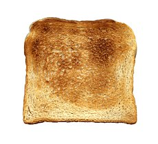

Toast

Description
It's just toast.
Ingredients
- 2 slices Bread
- Toppings (peanut butter, avocado, etc.)
Steps
- Take two slices of bread and place in toaster.
- Select your desired level of browning. (This varies according to toaster, refer to your toaster's manual if you get stuck.)
- Press down on the toaster lever.
- Wait until toast pops up.
- Remove toast from toaster and top with your favorite toppings.*
*we recommend spreading melted butter across the surface of the toast. yum!